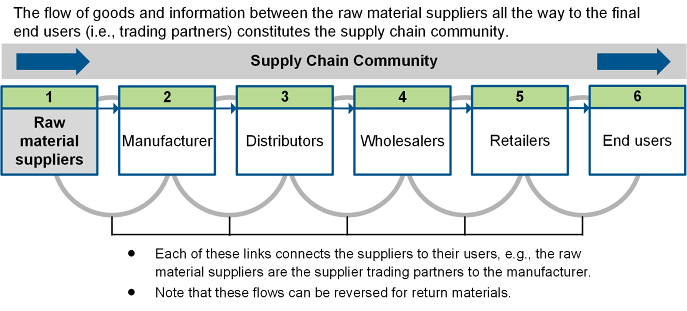
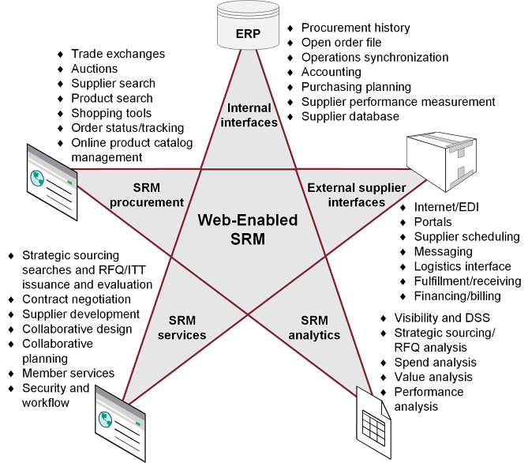

SRM methodology structures and supports relationships with suppliers to:

Supplier segmentation creates categories of suppliers to manage them appropriately — just as you segment customers, you segment suppliers. It is a key tool for a responsive supply chain.
Six forms of supplier segmentation:
SRM software streamlines connections between purchasers and suppliers, increases efficiency, and enables better supplier selection and performance monitoring.
SRM system components:
Web-enabled SRM (Exhibit 6-10) has three interfaces: Internal (ERP, procurement history, open orders, accounting, purchasing planning, supplier performance), External supplier interfaces (EDI/internet links), and SRM Analytics (visibility/DSS, strategic sourcing analysis, spend analysis, value analysis, performance analysis).

SRM Analytics types:
Click card to flip · Use arrows or shuffle to practise